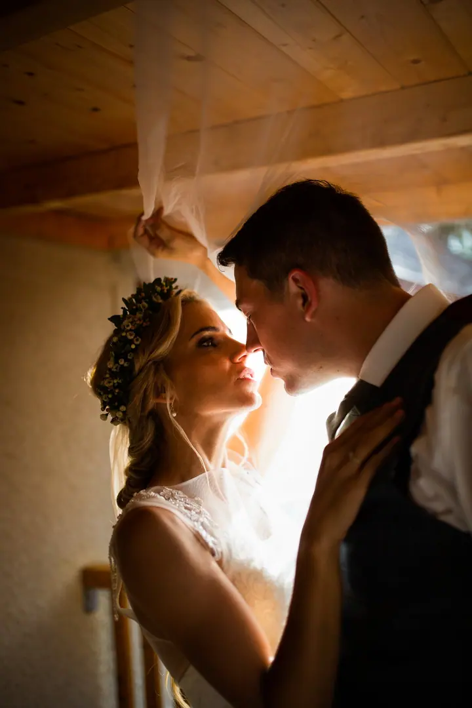
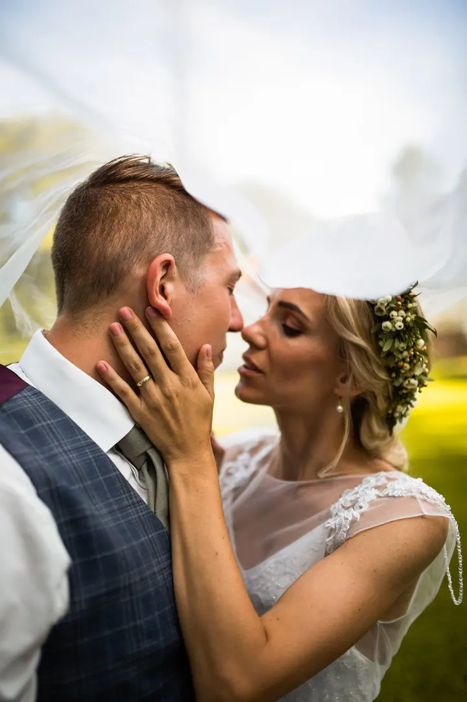
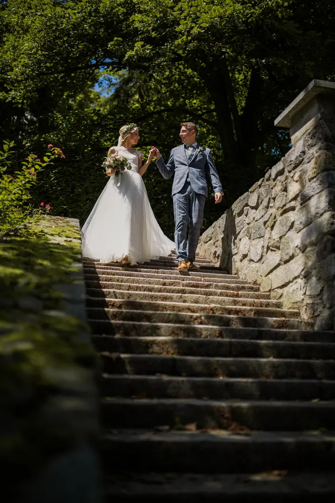
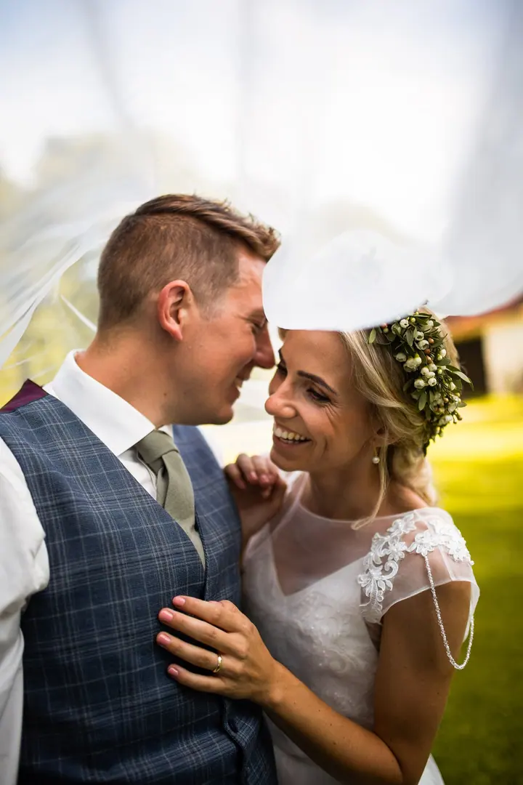

jedna
Svatební fotografie
Svatební den je speciální pro vás i pro vaše blízké a fotky vám ho budou připomínat po celý život. Orientační cena za svatbu je 20 000 Kč, konečnou vždy počítám individuálně.

Svatební a produktový fotograf · České Budějovice, Trhové Sviny

Jmenuji se Jan Salcer, ale klidně mi říkejte Honza. Jsem fotograf z jižních Čech a fotím hlavně svatby, produkty pro e‑shopy a reportáže z akcí. Bude mi ctí být součástí vašeho dne.
Více o mně
Co fotím
jedna
Svatební den je speciální pro vás i pro vaše blízké a fotky vám ho budou připomínat po celý život. Orientační cena za svatbu je 20 000 Kč, konečnou vždy počítám individuálně.
Spolupracuji s firmami, značkami i menšími tvůrci a pomáhám jim vizuálně vystavět důvěryhodný a profesionální e‑shop. Orientačně 300 Kč za kus.
Nafotím reportáž z akce, ale třeba i z rodinné oslavy, a vždy zachytím to důležité. Reportáž účtuji orientačně 800 Kč za hodinu.
Portrétní focení pro vás nebo pro vaše blízké. Orientační cena je 1 800 Kč.

Den, který se už nebude opakovat.


Za objektivem
Ahoj, moje jméno je Honza a jsem fotograf. V roce 2016 jsem vystudoval obor fotografie v Českých Budějovicích a od té doby se fotografií živím na volné noze. Zázemí mám v Trhových Svinech.
Svatební den je den speciální, pro vás i pro vaše blízké. Svatební fotky vám ho budou připomínat po celý život, a proto chci, aby byly opravdu vaše: obřad v kostele, první tanec, smích hostů i chvíle jen pro vás dva pod závojem.
Velkou část kariéry jsem věnoval produktové fotografii. Spolupracoval jsem na více než 3 mezinárodních kampaních a desítkách projektů pro české značky. Zajímám se o nové technologie v oboru a mou velkou vášní jsou auta.
Jan
Pošlete mi termín a místo přes formulář, e‑mail nebo telefon. Ozvu se a domluvíme, jestli mám ten den volno.
Probereme, jak má váš den vypadat a co je pro vás důležité. Cenu vždy počítám individuálně podle toho, co budete potřebovat.
Jsem s vámi, fotím a nechávám vás užívat si den. Najdeme i chvíli jen pro vás dva.
Fotky pečlivě vyberu a upravím a pošlu vám je v hotové galerii.
Portfolio
Otázky
Orientačně 20 000 Kč. Uvedené ceny jsou pouze orientační, konečnou cenu vždy počítám individuálně podle vašeho dne.
Ano. Fotím produkty pro e‑shopy, reportáže z akcí, portréty, auta nebo třeba rodinnou oslavu.
Orientačně 300 Kč za kus. U větších zakázek se domluvíme individuálně.
Napište mi přes formulář na webu nebo na jansalcer@gmail.com, případně zavolejte na 776 796 954. Ozvu se a domluvíme podrobnosti.

Napište pár vět o tom, co si představujete. · +420 776 796 954